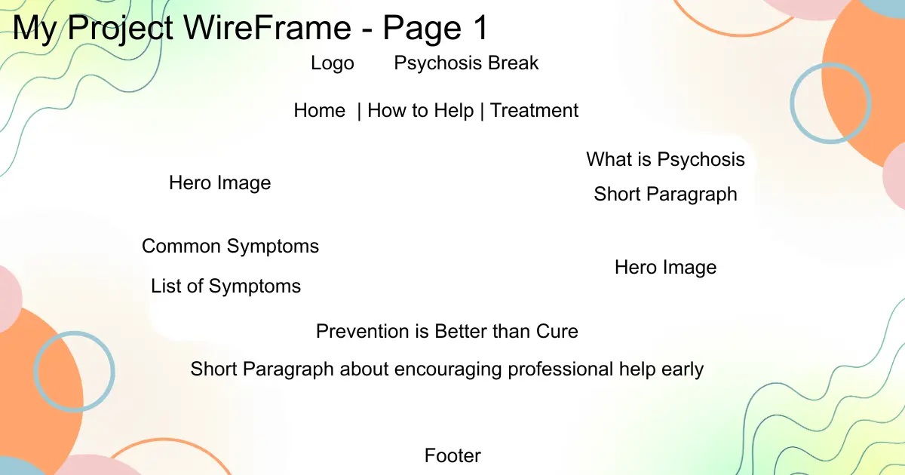
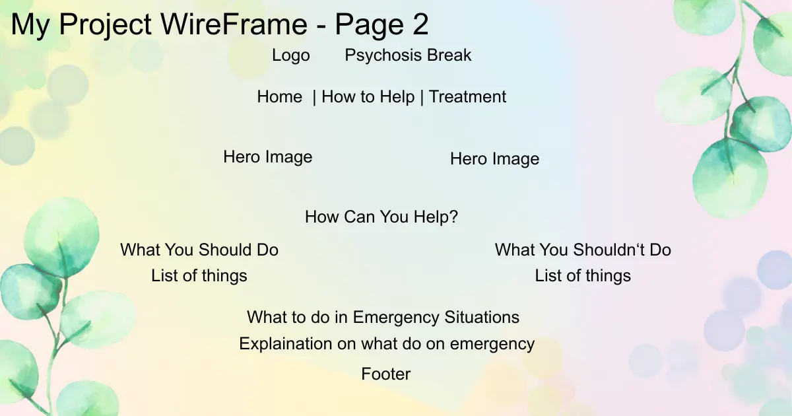
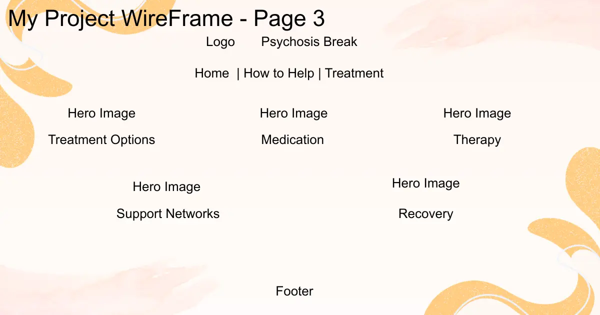
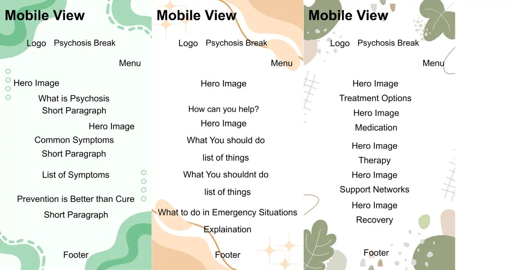

I chose this name for my subject to help people break out of Psychosis and potentially heal them for their sake and their families and friends.
The purpose of this website is to educate visitors about psychosis, including its symptoms, causes, available treatments, and ways to support someone experiencing the condition. The website aims to raise awareness, reduce stigma, and encourage people to seek professional help when needed.
How can I tell if someone might be experiencing psychosis?
What should I do if a friend or family member is showing signs of psychosis?
Dark Blue - #1F3A5F - For Header, Navigation, Headings
Light Gray - #F5F7FA - For Background
White - #FFFFFF - For Cards and Content
Soft Teal - #4AA3A2 - For Buttons and Accents
(Might Change)
I chose Poppins for Headings and Navigation and Open Sans for Paragraphs, List and General Text



